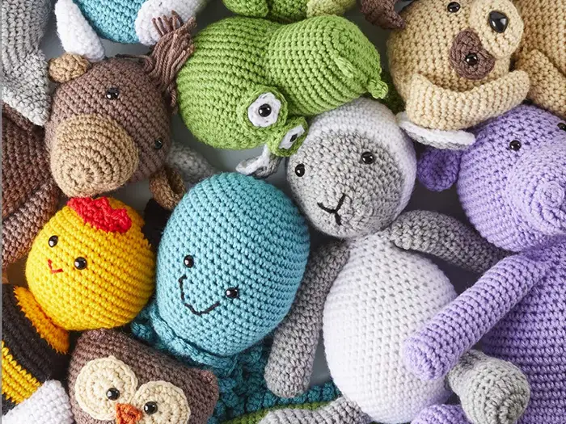

One of Sara's favorite pass times is crocheting! She has made stuffed animals, blankets, clothes and more for all of her children and grandchildren!
Sara plays cards with her siblings like the "quarter game", crazy eights, and rummy. She also likes to play solitaire!

Sara has been playing the tambourine since she was a little kid! She first started playing as a member of a church choir but now plays it for fun!